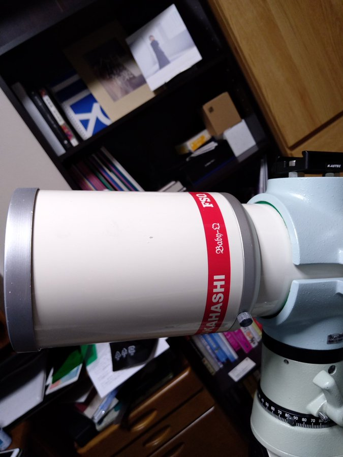
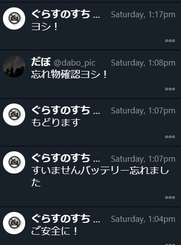
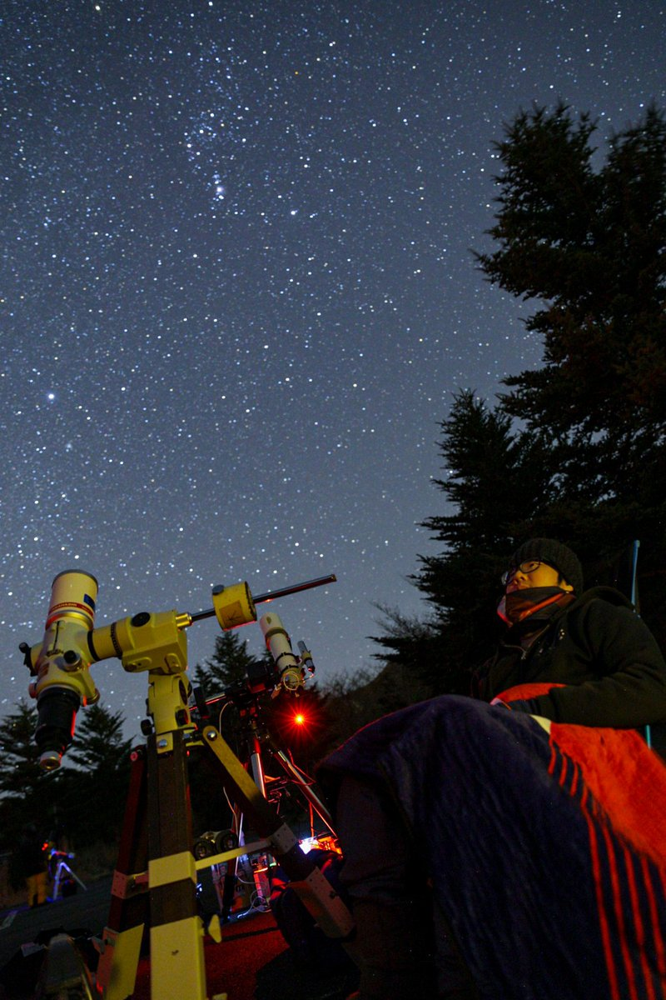
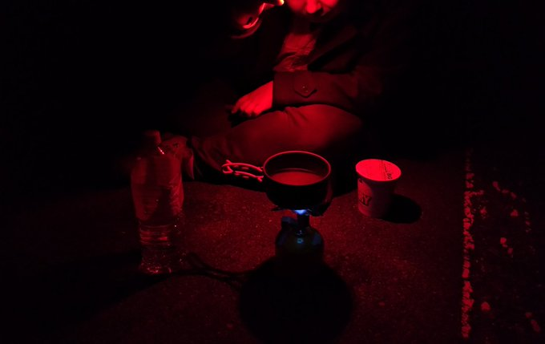
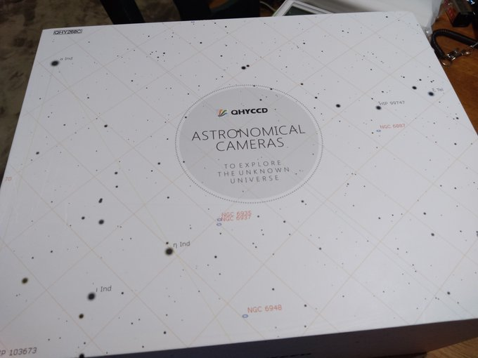
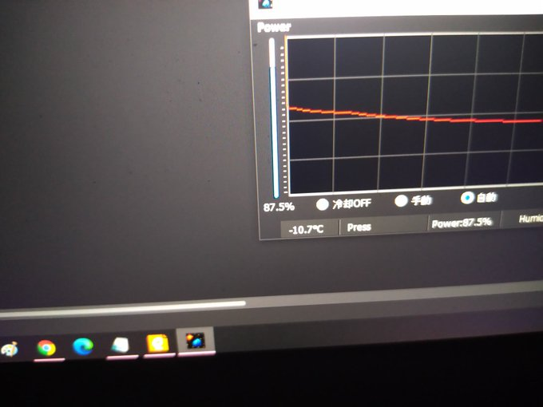

<!DOCTYPE html>
<html>

<head><meta name="generator" content="Hexo 3.8.0">
  <meta charset="utf-8">
  
    <title>
      
        ごほーこく | 
            ほしよみ大学生のブログ
    </title>
    <meta name="viewport" content="width=device-width">
    <meta name="description" content="あいさつこんにちは．研究関係が佳境に入っていてなかなか天文に頭を割けない今日このごろですが，いくつか書きたいことができたのでブログを書いています．">
<meta name="keywords" content="天体写真,カメラ,機材,鏡筒">
<meta property="og:type" content="article">
<meta property="og:title" content="ごほーこく">
<meta property="og:url" content="http://dabokun.github.io/2021/02/09/00000048-fsq-ret-qhy268c/index.html">
<meta property="og:site_name" content="ほしよみ大学生のブログ">
<meta property="og:description" content="あいさつこんにちは．研究関係が佳境に入っていてなかなか天文に頭を割けない今日このごろですが，いくつか書きたいことができたのでブログを書いています．">
<meta property="og:locale" content="ja">
<meta property="og:image" content="http://dabokun.github.io/2021/02/09/00000048-fsq-ret-qhy268c/card.jpg">
<meta property="og:updated_time" content="2021-06-07T17:29:03.557Z">
<meta name="twitter:card" content="summary_large_image">
<meta name="twitter:title" content="ごほーこく">
<meta name="twitter:description" content="あいさつこんにちは．研究関係が佳境に入っていてなかなか天文に頭を割けない今日このごろですが，いくつか書きたいことができたのでブログを書いています．">
<meta name="twitter:image" content="http://dabokun.github.io/2021/02/09/00000048-fsq-ret-qhy268c/card.jpg">
<meta name="twitter:creator" content="@astrodabo">
      
        <link rel="alternative" href="/atom.xml" title="ほしよみ大学生のブログ" type="application/atom+xml">
        
          
            <link rel="icon" href="/images/favicon.png">
            
              <link rel="stylesheet" href="/css/style.css">
                <!--[if lt IE 9]><script src="//html5shiv.googlecode.com/svn/trunk/html5.js"></script><![endif]-->
                
                  <script data-ad-client="ca-pub-1350688970555904" async src="https://pagead2.googlesyndication.com/pagead/js/adsbygoogle.js"></script>
</head></html>
<body>
  <div id="container">
    <div class="mobile-nav-panel">
	<i class="icon-reorder icon-large"></i>
</div>
<header id="header">
	<h1 class="blog-title">
		<a href="/">
			ほしよみ大学生のブログ
		</a>
	</h1>
	<nav class="nav">
		<ul>
			
				<li><a href="/">
						Home
					</a></li>
				
				<li><a href="/categories">
						Categories
					</a></li>
				
				<li><a href="/tags">
						Tags
					</a></li>
				
				<li><a href="/archives">
						Archives
					</a></li>
				
				<li><a href="/about">
						About
					</a></li>
				
				<li><a href="/work">
						Work
					</a></li>
				
					<li><a id="nav-search-btn" class="nav-icon" title="Search"></a></li>
					<li><a href="https://github.com/dabokun"></a>
					</li>
					<li><a href="https://twitter.com/astrodabo"></a></li>
					
						<li><a href="/atom.xml" id="nav-rss-link" class="nav-icon" title="RSS Feed"></a>
						</li>
						
		</ul>
	</nav>
	<div id="search-form-wrap">
		<form action="//google.com/search" method="get" accept-charset="UTF-8" class="search-form"><input type="search" name="q" class="search-form-input" placeholder="Search"><button type="submit" class="search-form-submit">&#xF002;</button><input type="hidden" name="sitesearch" value="http://dabokun.github.io"></form>
	</div>
</header>

    <div id="main">
      <article id="post-00000048-fsq-ret-qhy268c" class="post">
	<footer class="entry-meta-header">
		<span class="meta-elements date">
			<a href="/2021/02/09/00000048-fsq-ret-qhy268c/" class="article-date">
  <time datetime="2021-02-09T07:02:00.000Z" itemprop="datePublished">2021-02-09</time>
</a>
		</span>
		<span class="meta-elements author">astr0dab0</span>
		<div class="commentscount">
			
			<a href="http://dabokun.github.io/2021/02/09/00000048-fsq-ret-qhy268c/#disqus_thread" class="article-comment-link">Comments</a>
			
		</div>
	</footer>
	
	<header class="entry-header">
		
  
    <h1 class="article-title entry-title" itemprop="name">
      ごほーこく
    </h1>
  

	</header>
	<div class="entry-content">
		
		
		<div id="toc" class="toc-article">
			<p class="toc-title">目次</p>
			<ol class="toc"><li class="toc-item toc-level-3"><a class="toc-link" href="#あいさつ"><span class="toc-number">1.</span> <span class="toc-text">あいさつ</span></a></li><li class="toc-item toc-level-3"><a class="toc-link" href="#FSQ，帰還．天城へ．"><span class="toc-number">2.</span> <span class="toc-text">FSQ，帰還．天城へ．</span></a></li><li class="toc-item toc-level-3"><a class="toc-link" href="#冷やCMOS，はじめました．"><span class="toc-number">3.</span> <span class="toc-text">冷やCMOS，はじめました．</span></a></li></ol>
		</div>
		
		<h3 id="あいさつ"><a href="#あいさつ" class="headerlink" title="あいさつ"></a>あいさつ</h3><p>こんにちは．研究関係が佳境に入っていてなかなか天文に頭を割けない今日このごろですが，いくつか書きたいことができたのでブログを書いています．</p>
<a id="more"></a>
<h3 id="FSQ，帰還．天城へ．"><a href="#FSQ，帰還．天城へ．" class="headerlink" title="FSQ，帰還．天城へ．"></a>FSQ，帰還．天城へ．</h3><p><a href="/2020/12/01/00000042-clean-failure-maaya-alt/">赤道儀から立て続けにやらかした鏡筒</a>ですが，先日無事に復帰となりました．<br><br>ちょうど<a href="https://twitter.com/GLASnSCI" target="_blank" rel="noopener">ぐらすのすち氏</a>に遠征に誘われていたというのもあり，記念に天城で復帰戦と洒落込もうかと思ったのですが，カメラマウントもアイピースも忘れて置物になるという失態．<br>ぐらすのすち氏と以下のようなやり取りをしていたにも関わらず，送った私が忘れ物をするというね…．途中で忘れ物に気づいたのですが，ほとんど星撮りのやる気がなかったのでまあいいやと諦めました．</p>
<p></p>
<p>天城ではレンズを使った撮影もできたのですが，結局自撮りをして終わり，椅子に座って星を眺めたり，途中で合流した<a href="https://twitter.com/Mazic_tell_Arts" target="_blank" rel="noopener">takashiさん</a>と三人で様々な話題の話をしながら2時半ごろに月が昇るまでの時間を過ごしました．</p>
<p></p>
<p>また，現地ではぐらすのすち氏にコーヒー（とお湯）を，takashiさんにホットサンドメーカーで作ったバター肉まんを頂きました．絶品．</p>
<p>こちらは鍋すのすち氏．<br><div class="twitter-wrapper"><blockquote class="twitter-tweet"><a href="https://twitter.com/Mazic_tell_Arts/status/1358134286445027329" target="_blank" rel="noopener"></a></blockquote></div><script async defer src="//platform.twitter.com/widgets.js" charset="utf-8"></script><br>私もスマホで肉まんの写真は撮ったのですが，あまり美味しそうではなかったのでここには載せないでおきますｗ（実際は冷えた体に染み渡る旨さでした）<br>お二方には大変お世話になりました．</p>
<h3 id="冷やCMOS，はじめました．"><a href="#冷やCMOS，はじめました．" class="headerlink" title="冷やCMOS，はじめました．"></a>冷やCMOS，はじめました．</h3><p>それから本日 QHY268C が届きました．本当はもっと遅くなる（4月ぐらい？）はずだったのですが，やりとりをしていた代理店さんが先行入荷してくれたらしく，かなり早く届きました．</p>
<p></p>
<p>最近発表されたモノクロ版 QHY268M も少し悩みましたが，APSC だとフィルターホイールやフィルター自体の大きさが大きくなる可能性もあり，他に回したいコストがかかってしまうなと頭を冷やし，思いとどまりました．後述するように，6Dを直焦撮影中に使えるようにカメラを増やすことが目的だったので，特にモノクロに拘る理由もありませんでした．モノクロはもっと小さなセンサーサイズで，またしばらく経ったらやってみようかと考えています．<br>さてせっかく早く届いてくれたのはありがたいですが，大容量バッテリーもなければフィルターもスティック PC もないので自宅で簡単なテストくらいしかできませんね，3月には本稼働していきたいところです．<br>冷却を導入したというよりも，今まで撮影に使っていた6Dで直焦中に遊べるというのが個人的には大きいです．今までせっかく仲間と来ていても，撮影のやる気があるときは集合写真などを撮らずに終わってしまうこともありましたが，これでその問題はひとまず解消されそうです．<br>冷却だけテストしてみましたが，問題はなさそう．</p>
<p>冷却ヨシッ！</p>
<p>少しソフトウェアに慣れが必要そうな雰囲気がありますが，頑張って使いこなしていきたいです．<br>それでは．</p>

		
	</div>
	<footer class="article-footer">
		<a href="https://twitter.com/intent/tweet?text=%E3%81%94%E3%81%BB%E3%83%BC%E3%81%93%E3%81%8F｜%E3%81%BB%E3%81%97%E3%82%88%E3%81%BF%E5%A4%A7%E5%AD%A6%E7%94%9F%E3%81%AE%E3%83%96%E3%83%AD%E3%82%B0&url=http://dabokun.github.io/2021/02/09/00000048-fsq-ret-qhy268c/" class="twitter-share-button" target="_blank" title="Twitter"></a>
		<script async src="https://platform.twitter.com/widgets.js" charset="utf-8"></script>

		<div id="fb-root"></div>
		<script async defer crossorigin="anonymous" src="https://connect.facebook.net/ja_JP/sdk.js#xfbml=1&version=v4.0"></script>
		<div class="fb-share-button" data-href="http://dabokun.github.io/2021/02/09/00000048-fsq-ret-qhy268c/" data-layout="button_count" data-size="small"><a target="_blank" href="https://www.facebook.com/sharer/sharer.php?u=https%3A%2F%2Fdabokun.github.io%2F&amp;src=sdkpreparse" class="fb-xfbml-parse-ignore">シェア</a></div>
	</footer>
	<footer class="entry-footer">
		<div class="entry-meta-footer">
			<span class="category">
				
  <div class="article-category">
    <a class="article-category-link" href="/categories/equipments/">機材</a>
  </div>

			</span>
			<span class=" tags">
				
  <ul class="article-tag-list"><li class="article-tag-list-item"><a class="article-tag-list-link" href="/tags/camera/">カメラ</a></li><li class="article-tag-list-item"><a class="article-tag-list-link" href="/tags/astrophotography/">天体写真</a></li><li class="article-tag-list-item"><a class="article-tag-list-link" href="/tags/equipments/">機材</a></li><li class="article-tag-list-item"><a class="article-tag-list-link" href="/tags/telescope/">鏡筒</a></li></ul>

			</span>
		</div>
	</footer>
	
	
<nav id="article-nav">
  
    <a href="/2021/03/25/00000049-super-wide-bino-live/" id="article-nav-newer" class="article-nav-link-wrap">
      <strong class="article-nav-caption">Newer</strong>
      <div class="article-nav-title">
        
          スーパーワイドビノと坂本真綾25周年ライブ
        
      </div>
    </a>
  
  
    <a href="/2021/01/14/00000047-aflak-improc-02/" id="article-nav-older" class="article-nav-link-wrap">
      <strong class="article-nav-caption">Older</strong>
      <div class="article-nav-title">
        
          自作プログラムで画像処理（カラーヒストグラム表示～トーンカーブ作成まで）
        
      </div>
    </a>
  
</nav>

	
</article>


<section id="comments">
	<div id="disqus_thread">
		<noscript>Please enable JavaScript to view the <a href="//disqus.com/?ref_noscript">comments powered by
				Disqus.</a></noscript>
	</div>
</section>

    </div>
    <div class="mb-search">
  <form action="//google.com/search" method="get" accept-charset="utf-8">
    <input type="search" name="q" results="0" placeholder="Search">
    <input type="hidden" name="q" value="site:dabokun.github.io">
  </form>
</div>
<footer id="footer">
	<h1 class="footer-blog-title">
		<a href="/">ほしよみ大学生のブログ</a>
	</h1>
	<span class="copyright">
		&copy; 2022 astr0dab0<br>
		Modify from <a href="http://sanographix.github.io/tumblr/apollo/" target="_blank">Apollo</a> theme, designed by <a href="http://www.sanographix.net/" target="_blank">SANOGRAPHIX.NET</a><br>
		Powered by <a href="http://hexo.io/" target="_blank">Hexo</a>
	</span>
</footer>
    
<script>
  var disqus_shortname = 'astr0dab0';
  
  var disqus_url = 'http://dabokun.github.io/2021/02/09/00000048-fsq-ret-qhy268c/';
  
  (function(){
    var dsq = document.createElement('script');
    dsq.type = 'text/javascript';
    dsq.async = true;
    dsq.src = '//go.disqus.com/embed.js';
    (document.getElementsByTagName('head')[0] || document.getElementsByTagName('body')[0]).appendChild(dsq);
  })();
</script>


<script src="//ajax.googleapis.com/ajax/libs/jquery/2.0.3/jquery.min.js"></script>


<link rel="stylesheet" href="/fancybox/jquery.fancybox.css" media="screen" type="text/css">
<script src="/fancybox/jquery.fancybox.pack.js"></script>


<script src="/js/script.js"></script>
  </div>
</body>
</html>